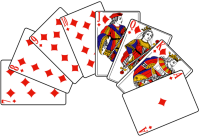

Os Rapazes
RPG dos Rapazes:
Bora jogar RPG?
O sistema mais animador atualmente para jogar-mos nossos RPG's é o sistema Tormenta 20, pois é um sistema simples e super equilibrado.
Esta imagem a seguir é um dado D20, o dado principal dos rpg's de mesa mais renomados:

A seguir algumas cartas de baralho, para jogos de azar:

Agora temos a amostra de mais alguns dados de RPG de mesa:

Sobre o mundo do RPG
O mundo do rpg pode ser muito Fantasioso ou muito Ficcional, pois um rpg de mesa altamente Realista se compara com a vida real.
Fantasia e Ficção Científica estão grudadas uma com a outra quando se trata de inventar uma história, pois as duas são invenções de uma mesma ideia. Isso significa que você pode criar, tanto em ficção, quanto em fantasia, monstros, plantas, animais e humanoides não existentes, objetos mágicos entre outras mil possibilidades.
Numa história de fantasia, por exemplo, imaginamos que em tempos de guerras, na era medieval, num mundo medieval, existiam gigantes, eles lutavam com mamutes e dragões. Mas também existiam anões, que rivalizavam com elfos e humanos.
Já numa história de aventura espacial, é possível criar problemas interplanetários, complicações na área da física, química, astrologia, e até histórias de traição no espaço.
Fórmula da Água --- H2O
Fórmula Matemática --- x20+3
Os Dados
Existe o dado D20, que é o dado mais conhecido do RPG de mesa, sendo o mais utilizado em sistemas principalmente para combates.
O dado D6, é o dado de 6 faces, o mais conhecido mundialmente, para outros tipos de jogos, mas também é bastante utilizado no rpg de mesa.
O dado D100, é a junção de dois dados, o dado de unidade e o dado de dezena. Ambos tem 10 faces, um deles vai de 0 a 9 e o outro vai de 00 a 90 pulando os números de unidade.
O dado D4 é o dado mais simples do RPG, pois ele pode ser utilizado tanto de acordo com a criatividade do mestre quanto como sistema.
Os dados D8, D10 e D12 são dados especificos, então podem ser utilizados de acordo como manda os sistemas de rpg.
D100|D100
D020|D020
D012|D012
D010|D010
D008|D008
D006|D006
D004|D004
A importância dos dados deixa o jogo mais espontâneo e divertido, faz com que ocorra a eliminação da ideia de um jogo apenas com combate fixo e certo e traga uma aleatoriedade, mesmo que baixa, com a quebra de espectativas e emoção
no meio de uma ação. Mas porque rolar dados num jogo de interpretação?
Não pense que um jogo de interpretações é apenas atuaçãozinha, não, RPG é imersão, apego emocional, é sentir a confiança em alguém e em si mesmo de fazer algo.
Lista de armas do personagem:
- Arco
- Katana
- Kunais
- Shurikens
- Zarabatana
Lista de lutas do personagem:
- Karatê
- Jiu-jitsu
- Judô
- Aikido
- Kenjutsu
- Kendo
- Iaido
Lista de magias e alquimias
- Poções
- Vida
- Mana
- Stamina
- Condição
- Elementos
- Água
- Sangue
- Gelo
- Pântano
- Água curandeira
Lista de Amigos do personagem:
- Pablo
- Seu melhor amigo, vocês bebem juntos, mas ele gosta de ser realista.
- Mônica
- Sua namorada, ela odeia quando você sai para uma aventura sem ela.
- Murdock
- Seu irmão, vai onde você for, você deve cuidar dele sempre.
Testes de alguma coisa
Passe o mouse sobre o texto abaixo
Texto 1
Texto 2
Texto 3
Passe o mouse aqui
Surpresa!
Mais
Se quiser saber mais sobre sistemas de itens, poderes ou relacionamentos de personagens de rpg pode pesquisar mais no Google
Se quiser acessar o teste de mídia é só clicar Aqui, mas cuidado com o volume antes de clicar :)
Acesse meu GitHub por esta página Aqui.
Como aprender programação javascript Aqui.
Este é o Site sério, eu acho né :/ É só clicar Aqui :)